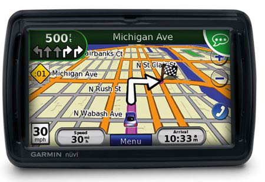
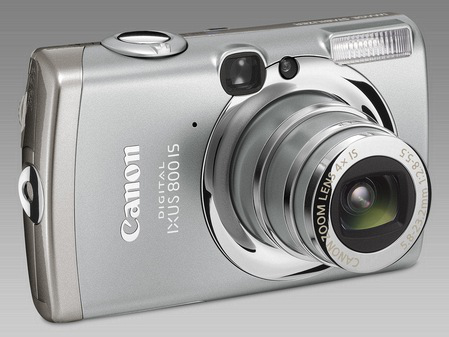
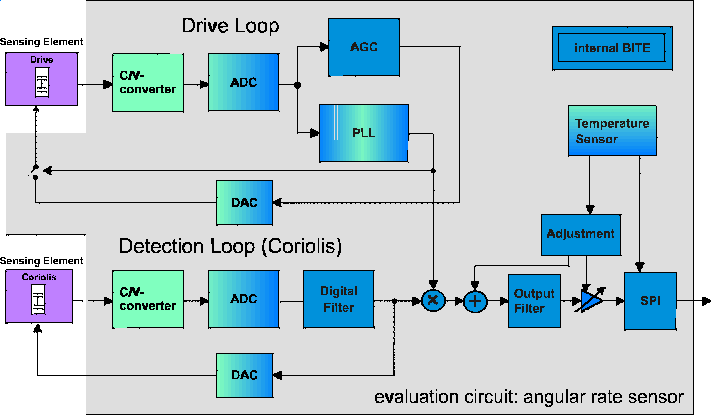
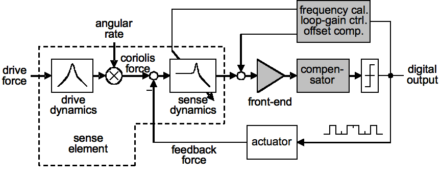
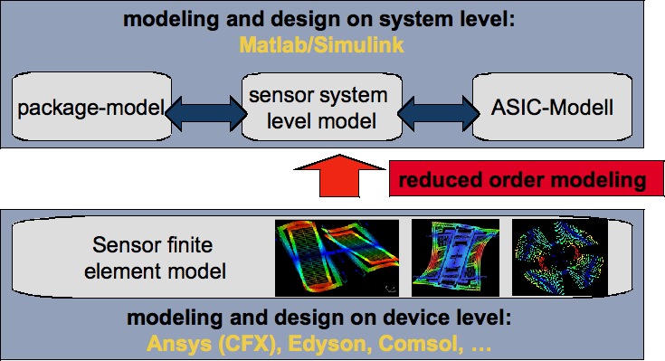
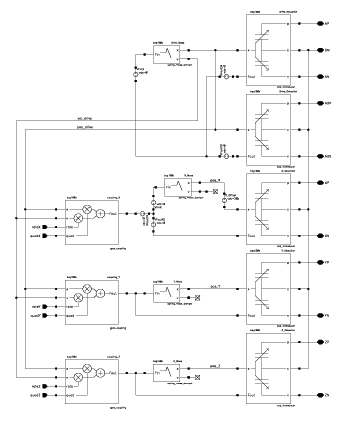
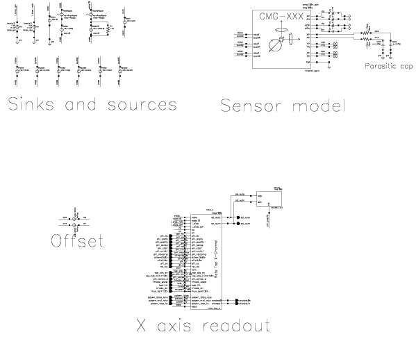
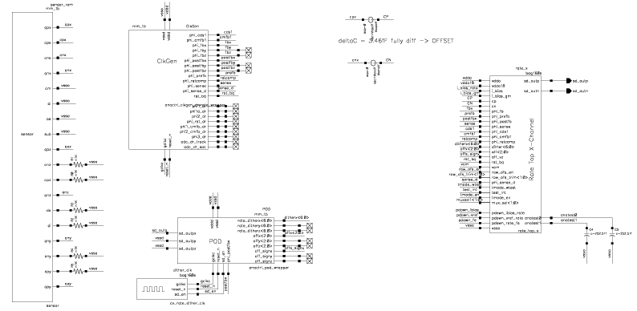

2 Systems Engineering for Gyros
2.1 Vehicles without ESP

2.2 Vehicle Dynamics Controls Systems - ESP

2.3 Consumer Gyroscopes
Market segments. * Mobile phones * Digital cameras * Pointing devices * Gaming consoles * GPS portables


2.4 MEMS for Automotive and Consumer Applications
- Jiri Marek, Senior Vice President, Robert Bosch, Reutlingen, Germany
2.5 MEMS Gyroscope in Action
2.6 Spring-Mass-Damping System
1-D equation of motion (EoM) \(F = m\ddot{x} + d\dot{x} + kx\)
Laplace transformation
\[ \begin{align} H(s) &= \frac{1}{m s^2 + d s + k} \\ &= \frac{\frac{1}{m}}{s^2 + \frac{\omega_0}{Q} s + \omega_0^2} \end{align} \]
2.7 Functional Block Diagram

Coriolis force principle, \(F_C = 2 m \left(\mathbf{v} \times \Omega \right)\)
Drive loop to have an accelerated mass
Sense loop to detect angular rate
Distinction of closed-loop and open-loop system
2.8 Multi-Domain Readout Block Diagram

\[ \begin{align} H_s(s) &= \frac{\frac{1}{m}}{s^2 + \frac{\omega_0}{Q}s + \omega_0^2} &\quad \mbox{sensor} \\ H_{CV}(s) &= \frac{g_m}{C_L}\frac{1-e^{-sT_{int}}}{s} &\quad \mbox{CV converter} \\ H_{lf}(z) &= -\frac{z}{z+a}\frac{z^2 +b_1z +b_0}{z^2 +c_1z +c_0} &\quad \mbox{loop filter} \end{align} \]
2.9 Multi-Domain Modelling
Describing kinematic and electrical behaviour with the help of HDL
- VHDL, VHDL-AMS
- Verilog, Verilog-A, Verilog-AMS
Using ROM for a MATLAB/SIMULINK model and real-time workshop to port model for use with Cadence \(\rightarrow\) Verilog-AMS is used for wrapping
Parasitic SPICE circuit equivalent from FEM sensor model and layout extraction
2.10 ROM Modelling - Coordinate transformation

\[ \begin{align} M \ddot{x} &+ K x &= F &\quad \mbox{FEM, 100.000 DOF}\\ M \phi \ddot{q} &+ K \phi q &= F & \\ \underbrace{\phi' M \phi} \ddot{q} &+ \underbrace{\phi' K \phi} q &= \phi' F & \\ \tilde{M} \ddot{q} &+ \tilde{K} q &= \tilde{F} & \quad \mbox{ROM, approx. 10 DOF} \end{align} \]
2.11 Gyro Behavioural Modelling

2.12 Mixed-domain simulation
All models from previous slide can be used in Cadence design frame work
Pure analog closed-loop transient simulation with Spectre (turbo, aps), circuits and verilog-a model
Pure analog closed-loop simulation with SPICE circuit equivalent
Mixed-domain, mixed-mode simulation with AMSDesigner (ncsim, spectre-turbo/aps)
2.13 Analog Closed-Loop Simulation

2.14 AMS Closed-Loop Simulation

2.15 Conclusion
Vibratory Gyroscopes.
Automotive and consumer applications
System architectures
Mixed-domain, mixed-mode analysis
Interdisciplinarity \(\rightarrow\) IC Systems Engineering Control theory, signal theory, process technology and micromechanics
More DOF’s.
Acceleration and angular rate (6 DOF’s)
Angulare rate and magneto sensors (6 DOF’s)
Acceleration, angular and magneto (9 DOF’s)